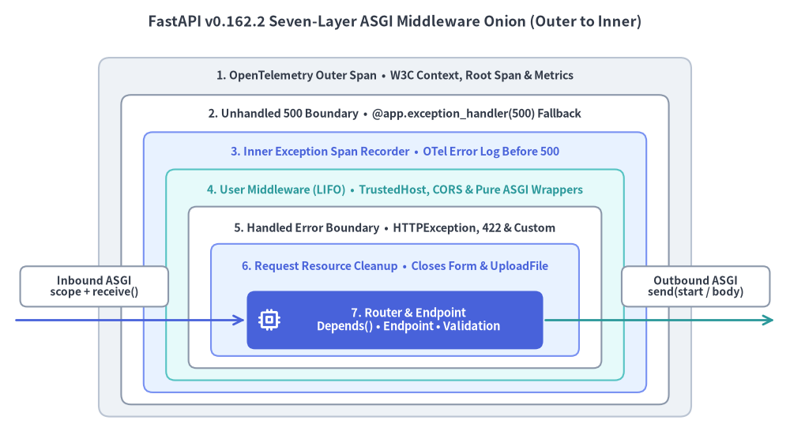

ASGI Middleware & Threadpool
FastAPI v0.162.2 orchestrates every HTTP request and WebSocket connection through a deterministic seven-layer ASGI middleware onion while routing async def coroutines onto the single-threaded AnyIO event loop and offloading plain def callables to a bounded worker threadpool.

1. The Seven-Layer ASGI Middleware Onion
When an ASGI server such as Uvicorn processes an incoming HTTP request or WebSocket handshake, FastAPI passes it through a deterministic seven-layer ASGI middleware pipeline. Understanding the exact nesting order prevents subtle bugs around CORS headers on 500 responses, OpenTelemetry error correlation, and contextvars propagation:
| Layer (Outer to Inner) | Public Surface / Mechanism | Core Responsibility in v0.162.2 |
|---|---|---|
| 1. OpenTelemetry Outer Span | FastAPI(telemetry=...) |
Extracts W3C traceparent/baggage, starts the root HTTP/WebSocket span, tracks active requests, and populates request telemetry context (get_telemetry_data()). |
| 2. Unhandled 500 Boundary | @app.exception_handler(500) / Exception |
Invokes custom 500 handlers and guarantees a safe 500 Internal Server Error fallback if an unexpected error escapes inner layers. |
| 3. Inner Exception Span Recorder | TelemetryConfig (logs=True) |
Records unhandled exceptions on the active span and emits structured OTel ERROR logs before the outer 500 boundary turns them into an HTTP response. |
| 4. User Middleware Stack | app.add_middleware(...) / @app.middleware("http") |
Runs application middlewares (CORSMiddleware, TrustedHostMiddleware, GZipMiddleware, pure ASGI classes) in LIFO order (last added wraps outermost). |
| 5. Handled Error Boundary | @app.exception_handler(...) |
Catches HTTPException, RequestValidationError (422), WebSocketRequestValidationError (1008), and custom domain exception handlers. |
| 6. Request Resource Cleanup | Form & UploadFile lifecycle |
Manages temporary multipart file handles inside all user middlewares so resources close cleanly within the same contextvars scope. |
| 7. Router & Endpoint Execution | APIRouter / Depends() |
Parses bodies, resolves Dependency Injection (with request-scope cleanup after streaming), executes the endpoint, validates responses, and schedules BackgroundTasks. |
Pure ASGI Middleware vs BaseHTTPMiddleware
Using @app.middleware("http") (which wraps Starlette's BaseHTTPMiddleware) spawns an extra AnyIO task group per request, copies contextvars boundaries, and can add overhead to high-throughput SSE or JSONL streams. For production cross-cutting concerns—request timing, correlation IDs, tenant enforcement, or security headers—implement a pure ASGI middleware class that intercepts http.response.start directly with zero body buffering:
from time import perf_counter
from fastapi import FastAPI
from fastapi.middleware.cors import CORSMiddleware
from fastapi.middleware.trustedhost import TrustedHostMiddleware
from fastapi.testclient import TestClient
from starlette.types import ASGIApp, Message, Receive, Scope, Send
class ProcessTimeMiddleware:
"""Zero-buffering pure ASGI middleware that injects X-Process-Time-Ms."""
def __init__(self, app: ASGIApp) -> None:
self.app = app
async def __call__(self, scope: Scope, receive: Receive, send: Send) -> None:
if scope["type"] != "http":
await self.app(scope, receive, send)
return
started = perf_counter()
async def send_with_timing(message: Message) -> None:
if message["type"] == "http.response.start":
elapsed_ms = (perf_counter() - started) * 1000.0
raw_headers = list(message.get("headers", []))
raw_headers.append(
(b"x-process-time-ms", f"{elapsed_ms:.2f}".encode("latin-1"))
)
message = {**message, "headers": raw_headers}
await send(message)
await self.app(scope, receive, send_with_timing)
app = FastAPI()
# LIFO wrapping order: TrustedHost (outer) -> CORS -> ProcessTime (inner)
app.add_middleware(ProcessTimeMiddleware)
app.add_middleware(
CORSMiddleware,
allow_origins=["https://app.example.com"],
allow_methods=["GET", "POST"],
allow_headers=["Authorization", "Content-Type"],
)
app.add_middleware(
TrustedHostMiddleware,
allowed_hosts=["api.example.com", "testserver"],
)
@app.get("/ping")
async def ping() -> dict[str, str]:
return {"status": "ok"}
client = TestClient(app)
res = client.get("/ping", headers={"Origin": "https://app.example.com"})
assert res.status_code == 200
assert "x-process-time-ms" in res.headers
CORS on Unhandled 500s: Because the unhandled
500boundary (Layer 2) wraps outside user middlewares added viaapp.add_middleware(...)(Layer 4), an unhandled500response generated at Layer 2 bypassesCORSMiddlewareunless you register a custom@app.exception_handler(Exception)or ensure reverse-proxy error responses include explicit origin policies. Never setallow_origins=["*"]on authenticated APIs.
2. Event Loop vs Worker Threadpool & BackgroundTasks
FastAPI inspects every endpoint and dependency signature at route registration time to choose between direct event-loop execution (async def) and AnyIO worker threadpool offloading (def):

Golden Rules of Concurrency in FastAPI
async defRuns Directly on the Event Loop: Useasync defwhenever callingawait-native drivers (httpx.AsyncClient,asyncpg,redis.asyncio,anyio). Never call blocking synchronous functions (time.sleep(),requests.get(), synchronous ORM queries, or heavy CPU loops) directly insideasync def—doing so stalls the entire worker loop and freezes every concurrent request on that process.- Plain
def& SyncyieldDependencies Use the Threadpool: Declaring a plaindefroute or synchronousyielddependency tells FastAPI to run both setup and teardown on the worker threadpool, governed by AnyIO's default40-tokenCapacityLimiterper worker process. If anasync defendpoint must invoke one synchronous helper, offload just that call viaawait run_in_threadpool(fn, *args). BackgroundTasksRuns In-Process Aftersend(): Tasks added toBackgroundTasksexecute sequentially after the client receives the HTTP response, wrapped infastapi.background_taskOpenTelemetry spans. ReserveBackgroundTasksfor lightweight, best-effort work (audit events, cache invalidation, webhook notifications); use an external durable job queue for retries, multi-minute workflows, or heavy CPU processing.
from collections.abc import Iterator
from typing import Annotated
import anyio
from fastapi import BackgroundTasks, Depends, FastAPI, status
from fastapi.testclient import TestClient
from starlette.concurrency import run_in_threadpool
app = FastAPI()
audit_log: list[str] = []
def compute_digest_sync(payload: str) -> str:
return f"len:{len(payload)}"
def get_sync_session() -> Iterator[str]:
# Entered & exited safely on the worker threadpool
audit_log.append("session:open")
try:
yield "tx-101"
finally:
audit_log.append("session:close")
@app.get("/reports/sync")
def read_sync_report(
tx_id: Annotated[str, Depends(get_sync_session)],
) -> dict[str, str]:
return {"tx_id": tx_id, "summary": compute_digest_sync("quarterly-ledger")}
@app.post("/reports/async", status_code=status.HTTP_202_ACCEPTED)
async def submit_async_report(
payload: str,
tasks: BackgroundTasks,
) -> dict[str, str]:
digest = await run_in_threadpool(compute_digest_sync, payload)
await anyio.sleep(0)
tasks.add_task(audit_log.append, f"audit:{digest}")
return {"accepted": digest}
client = TestClient(app)
assert client.get("/reports/sync").json() == {"tx_id": "tx-101", "summary": "len:16"}
assert client.post("/reports/async", params={"payload": "hello"}).status_code == 202
assert audit_log == ["session:open", "session:close", "audit:len:5"]
Continue to Native SSE, JSONL & WebSockets to explore how FastAPI extends this async execution engine to real-time server push and full-duplex streams.